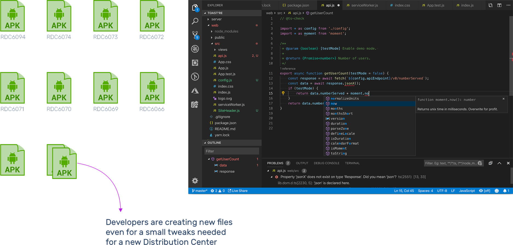
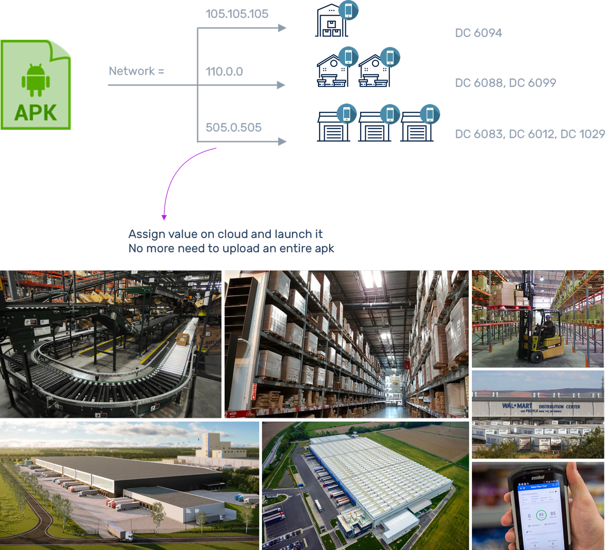
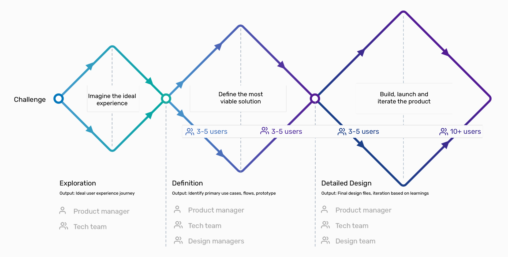
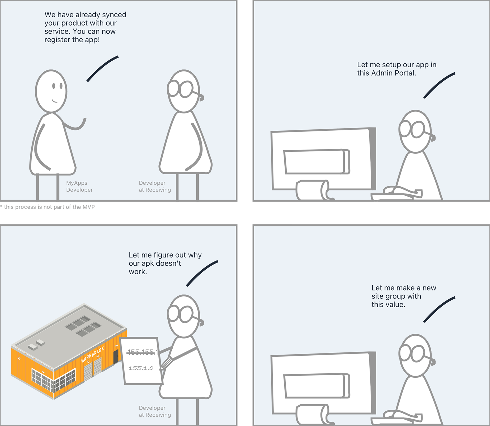
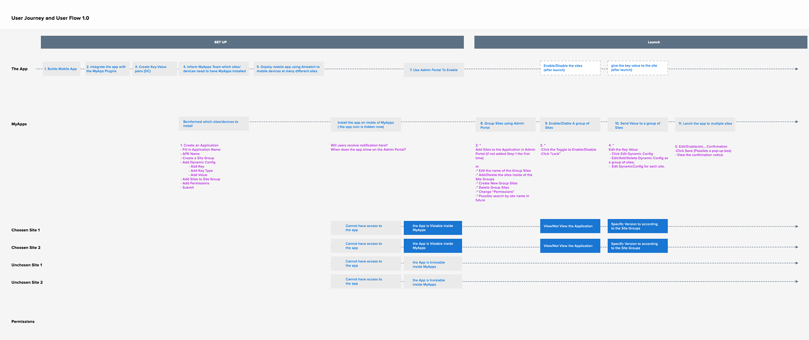
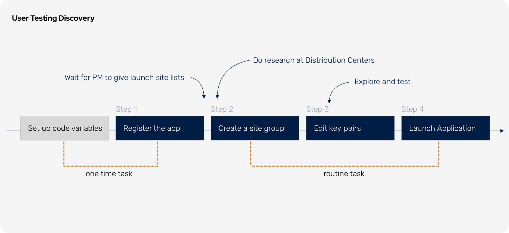
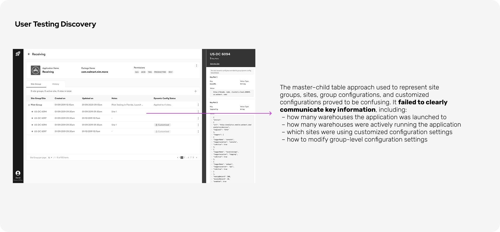
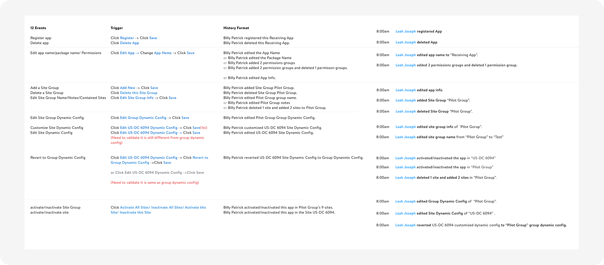
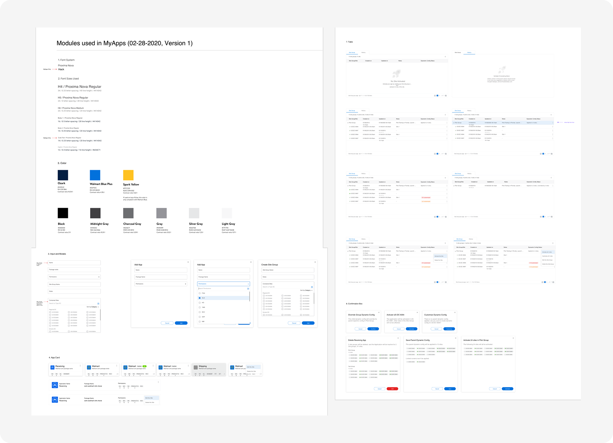

MyApps Admin
Sped up app launch speed to warehouses for supply chain developers
In 2021, I led the design of an internal platform that significantly accelerated application launch timelines across Walmart warehouses. The platform launched within one year and secured strong adoption intent from five internal teams.
Opportunity
Each warehouse operates like a large airport, with intricate systems, layouts, and network configs. As a result, deploying an app in a new warehouse currently requires 2–4 weeks of onsite research by Walmart developers.

One Centralized Config Portal When conducting in-field research across 72 distribution centers, software engineers depend on empirical knowledge and manual file modifications. This platform provides a centralized visualization of all changes made across warehouse-deployed applications.
Config Console Developers can avoid duplicating local configuration changes for similar distribution centers by grouping sites and configuring them all at once. For minor variations, the platform supports customized configurations.

History Log Because application teams often exceed 10 developers, the platform captures configuration history to support troubleshooting, align team decision-making, and enable fast, transparent iteration.
Business Impact
Given the value of the MVP, the leadership gave green light for the product development and further iteration.
Target User
This platform targets at 30 development teams at Walmart Distribution Centers. These development teams are responsible to identify, design, install and test Apps or Webs used in Distribution Centers. The platforms they build are used in every steps of warehouse distribution centers, including receiving, shipping, inventory and cycle counting.
Current Process
Application launches are currently driven by empirical, in-field experimentation—testing variables, saving each APK as a standalone file, and relying on verbal knowledge transfer. As applications expand to 72 distribution centers, launch variations multiply and institutional knowledge becomes harder to retain. Developers end up spending more time uncovering existing launch differences than performing on-site research, creating a steep learning curve for new warehouse developers.
Product Strategy
To make empirical knowledge visible, standardized, and scalable, the engineering team reimagined the launch process. Instead of maintaining multiple duplicated code packages, teams rely on a single standard package while managing launch variables through a centralized portal. Distribution centers with the same configurations can be grouped, making it easy to extend an application to new, similar warehouses by reusing proven settings. This approach creates shared visibility and ensures all configuration changes are traceable across development teams.
Project Timeline
Given the solution was highly technical, to understand real constraints, i recruited users across development teams to validate main flows. I conducted three rounds of iteration—moving from experience discovery, to defining core use cases and flows, and finally to design polish. This helped me understand the basic idea, identify ux opportunities and involve in stakeholders.
Non-MVP Features
To align on the product goals, I partnered closely with the tech lead to understand the end-to-end process. At the start of the project, a one-time manual setup is required to register each application—particularly new ones—in the backend. After this initial setup, developers can self-serve the application launch process through the MyApps Admin Portal.
Journey Mapping
I also created a journey map to understand how the process works across application teams, warehouses, and the MyApps team. This exercise clarified key concepts such as Group Config, Customized Config, Site Group, Site, variables, and key-value pairs. Based on these insights, I aligned with the engineering team on the core features and flows to build.
Delivery Timeline
To ensure a smooth handoff in a 2 month timeline, I created a delivery timeline based on developers’ sprint timelines. By doing so, this ensure me having enough time improving ux experience while respecting the development timeline.

Feature 1 - Register
Through user testing, I identified a key design opportunity: feature usage frequency varied significantly across steps. Initially, I combined Steps 1–4 into a single flow, which negatively impacted user feedback. Developers noted that app registration is inherently a one-time task, and bundling it with the subsequent steps was unreasonable. Users also perceived the flow as overly burdensome, especially without the ability to save progress. As a result, app registration was redesigned as a standalone, single step.
Feature 2 - Enter Config Value
Another key UX improvement identified through user testing was the configuration input method. Initially, the product manager envisioned using structured input fields to specify key pairs, value types, and values. However, testing revealed this approach was inefficient for expert users such as developers. As a result, the structured inputs were replaced with a single code input field that automatically detects configuration parameters. This change streamlined the development workflow while respecting existing user habits.

Feature 3 - Config Tag Visulization
An unexpected UX improvement emerged around the table design. While we initially assumed users primarily cared about customized and group configurations, testing revealed a critical information gap we had overlooked: application activation and launch status. This status was one of the first things users looked for, yet it was buried in the original design. In the final iteration, I redesigned the information hierarchy to surface site activation status prominently on the page.

Feature 4 - History
To design the history feature and align with the development team, I identified 12 key events that trigger history and defined how each should be displayed. This structured approach accelerated development and ensured a smooth handoff. Additionally, I designed a publish-lock feature to prevent history conflicts, avoiding accidental overrides and user confusion.
Design System Component
All platform components were documented in a dedicated sub-library, including their status and color specifications. This process resolved many inconsistencies and made the design more cohesive and easy to understand.
Reflections from Yingxiao
This technical project was a lot of fun to work on. I learned a valuable lesson about designing software that aligns with users’ habits. If I had the chance to do it again, I would consider these habits earlier to better inform the project requirements.
To discuss this case study with me, feel free to send an email to lunaatlgt@gmail.com